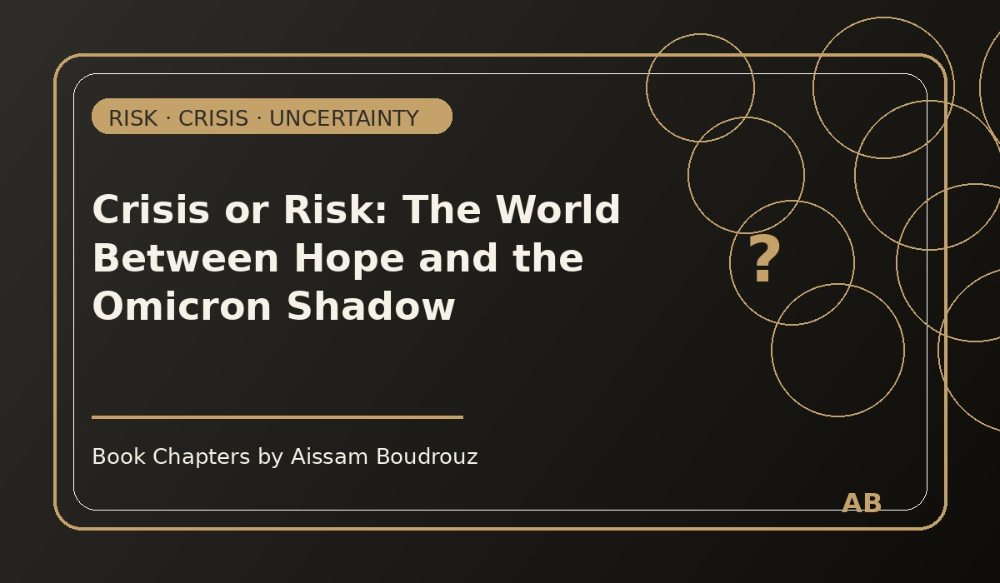

Crisis or Risk: The World Between Hope and the Omicron Shadow
It was late November 2021.
Across the world, everyone was finally starting to believe that 2022 would bring some peace — that the economy would finally catch its breath after two years of pandemic shock.
Reports from the World Bank, the IMF, and other organizations were full of optimism.
Charts, forecasts, recovery plans — all pointing in the same direction:
“By early 2022, production will return to pre-COVID levels.”
It felt like the world was preparing for a quiet comeback.
Then, out of nowhere, came a name no one expected: Omicron.
Page 1 – When hope meets surprise
News of a new COVID variant spread faster than the virus itself.
Governments called emergency meetings, airports began closing, and headlines turned dark again.
For a few weeks, it felt like déjà vu — as if we’d been dropped back into 2020 overnight.
What made Omicron different wasn’t just its biology — it was its timing.
The world had just started hoping.
Businesses were reopening, travelers were booking flights, investors were predicting growth.
And then suddenly — uncertainty returned.
That’s when I remembered something I learned back in university:
A risk is something you can measure.
A crisis is what happens when you can’t.
Page 2 – The difference between risk and crisis
Economically speaking, a risk is predictable — like a possible drop in prices or a small market correction.
You can estimate it, model it, prepare for it.
But a crisis? A crisis is the unexpected — the event no one saw coming.
That’s why economists call it “crise” and not “risque.”
Omicron was exactly that.
No model could have predicted it, and yet in just two days, it erased months of optimism.
Stock markets fell, flights were canceled, and oil prices — which had been climbing for weeks — plunged back to September levels.
All because of a single word in the news: variant.
Page 3 – The fragile balance of information
This episode reminded me of something deeper: how fragile global confidence really is, and how powerful information has become in modern economics.
Only two weeks earlier, we were talking about high oil prices for two reasons:
Rising demand, driven by speculators betting that 2022 would be the year of recovery.
OPEC’s decision not to increase production despite growing global demand.
Everyone was sure the worst was behind us.
Then came one announcement — “a new variant detected” — and all that optimism collapsed.
Investors pulled back, demand expectations shrank, and oil prices fell within hours.
The world didn’t even know if Omicron was dangerous yet.
Uncertainty alone was enough to freeze everything.
Page 4 – The week of waiting
For the next few weeks, the world waited.
Scientists rushed to study the new variant, investors watched the news like gamblers holding their breath, and governments tried to sound calm while quietly updating their restrictions.
I remember thinking that week:
Economics isn’t just about production or money — it’s about trust.
When trust disappears, markets stop moving, investments pause, and people retreat.
So, until the studies came out, everyone waited — cautiously, nervously — to see whether Omicron would be just another headline or another storm.
Page 5 – The quiet realization
In the end, what I took from that episode wasn’t just another lesson in macroeconomics, but in human psychology.
We live in a world where a single news alert can shake entire economies — where confidence is as valuable as oil, and fear spreads faster than inflation.
That day, I closed my laptop, looked out the window, and thought:
“Maybe the real difference between a risk and a crisis
isn’t how big it is —
but how ready we are to face it.”